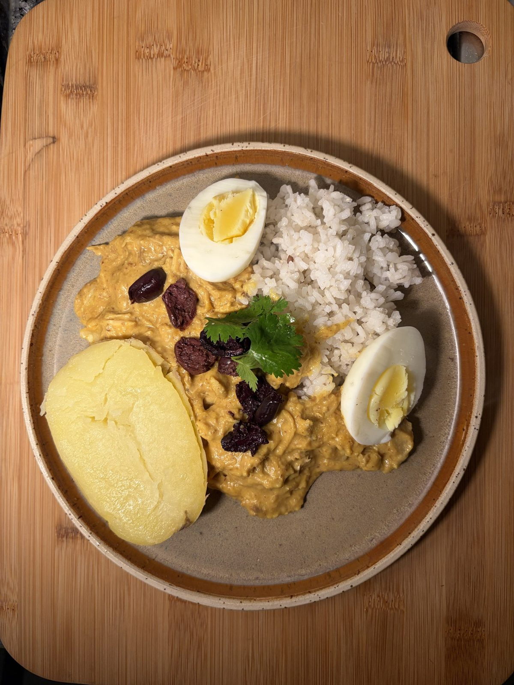

Receta · Para 8 personas · 60–75 min
Una versión del clásico peruano que consigue su textura sedosa con leche evaporada, nueces y queso fresco, en lugar de pan. Intensa, ligeramente picante y muy equilibrada.
Pollo y caldo
Salsa de ají
Para acompañar
Consejo: el picante depende mucho de la marca de pasta de ají. Si no la conoces, empieza con 180–200 g y añade el resto después de probar.